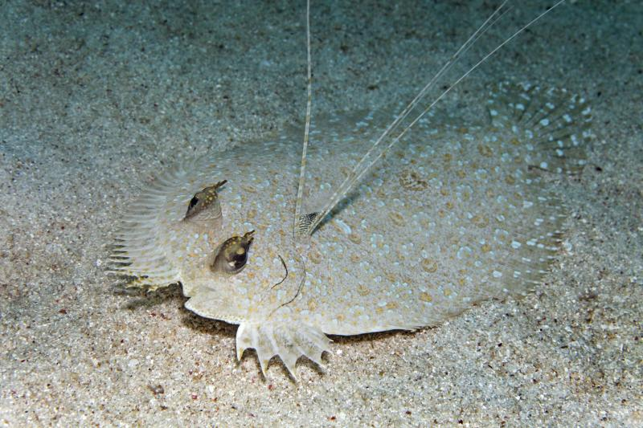

Бездна Челленджера : Самая глубокая точка. Замеры варьируются от 10863 м до 11034 м, при этом наиболее принятая цифра — около 10994 м.
Рекорд погружения: В 1960 году батискаф «Триест» достиг глубины около 10912 м. Позже, в 2019 и последующие годы, глубоководные аппараты (в т.ч. Limiting Factor) совершили новые погружения на отметки свыше 10 900 м.
Условия на дне:
Давление: Превышает атмосферное в 1000 раз.
Свет: Полная темнота
Температура: Очень низкая, близкая к замерзанию (около 1–4 °C), но рядом с гидротермальными источниками может быть выше
Исследования китайских аппаратов (и других экспедиций) доказали, что на глубинах около 10 000 метров существует жизнь:
Организмы: Были обнаружены многощетинковые черви, двустворчатые моллюски и плоские рыбы (похожие на камбалу).

Экосистема: Вопреки ранним представлениям, на дне обнаружены целые колонии живых существ, приспособившихся к колоссальному давлению.
наверх